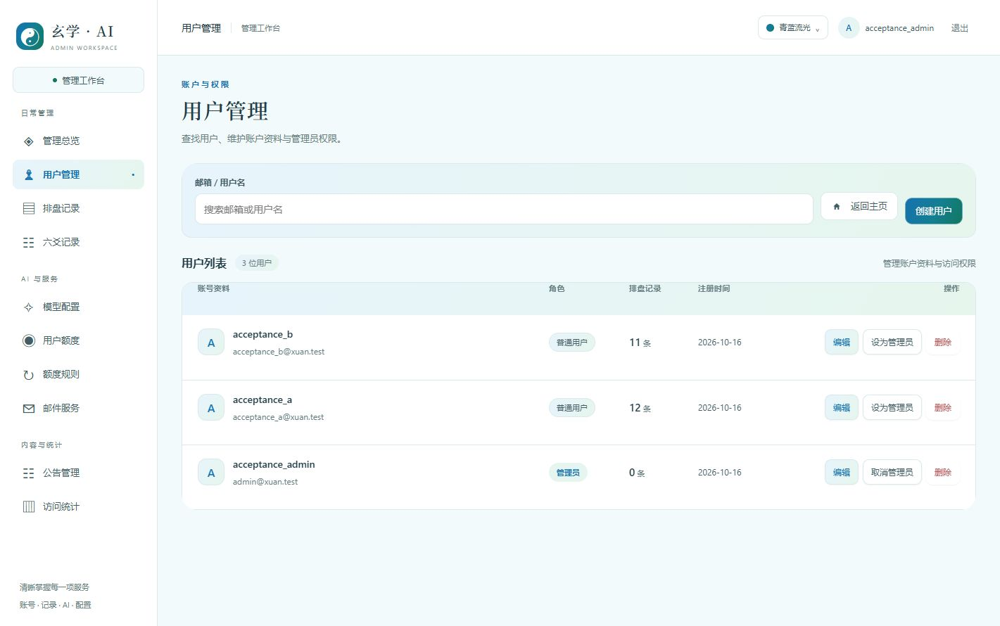
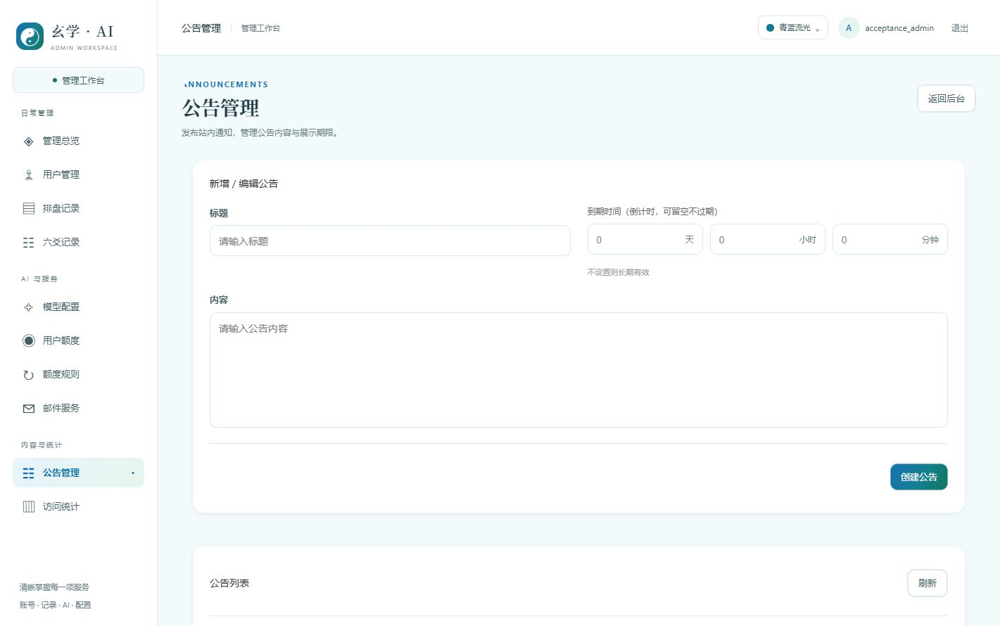
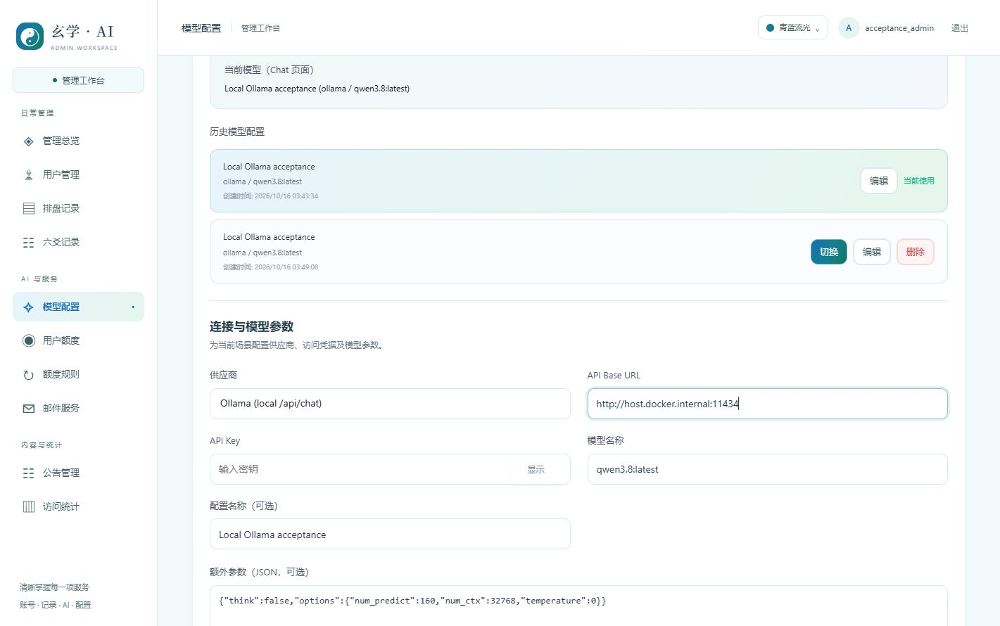
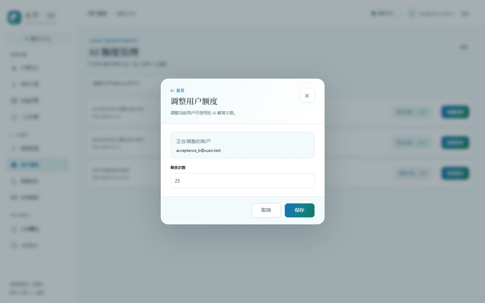
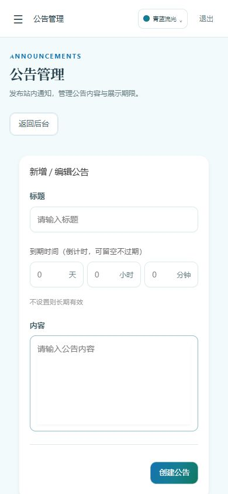
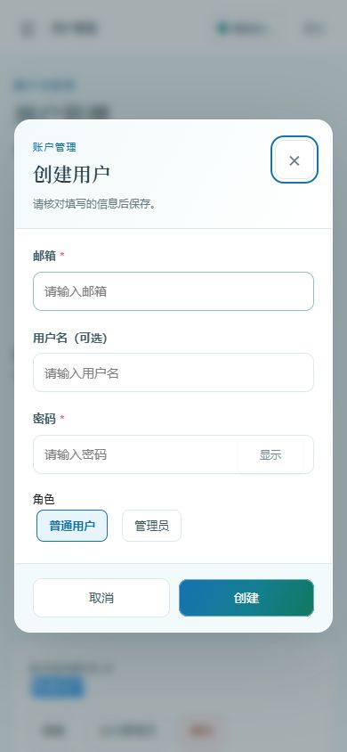
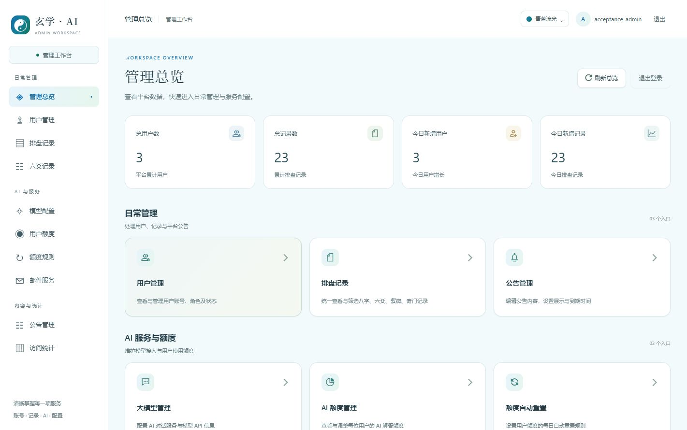
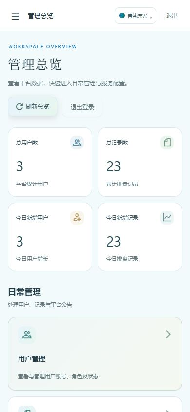
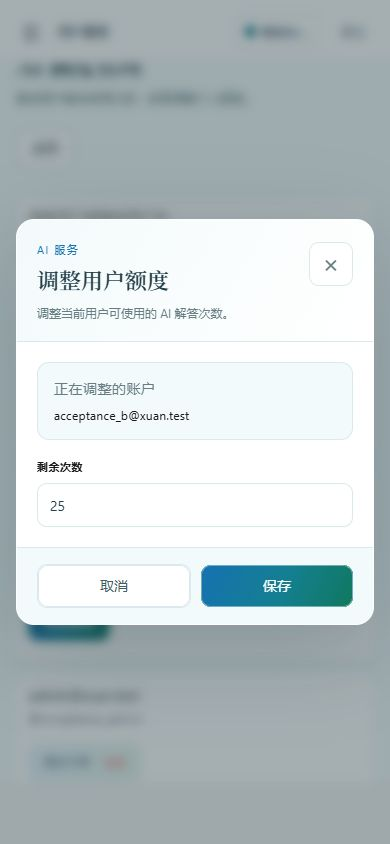
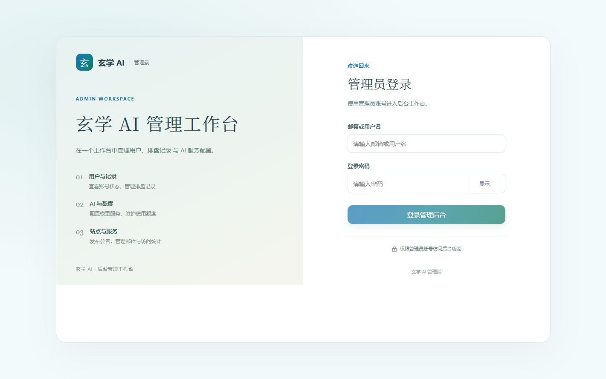

历史验收资料
本页保留 2026-10-16 的测试和截图，不能当作本次重新实测结果。2026-10-25 提交前已重新执行自动测试、类型检查、代码检查与构建；后台旧配色已收敛为青蓝流光、琥珀暖阳。本次另补后台旧配色清理及过期会话最终时长结算修复。旧隔离 MySQL 本次未启动，历史集成结果不覆盖新增修复；新增修复已有客户端与原路由组合回归测试。
查看本次检查范围与结果
玄学 · AI / 管理工作台 / 2026-10-16
管理员后台 UI 验收
用户列表重新整理 · 2026-10-16
已实施 · 浏览器检查通过
桌面改为统一目录面板：账号/邮箱合并、角色使用柔和标签、记录数与日期按列对齐、操作靠右。单行92px，减少原卡片的大块留白。手机使用紧凑卡片，底部42px操作按钮，管理员角色不再使用醒目红底。
真实浏览器检查1421、1280、834、390和320px，均无整页横向溢出。鼠标与Enter打开编辑弹窗、Escape关闭并恢复焦点通过；未保存用户、修改权限或执行删除。原业务脚本与处理函数保持不变，仅增加键盘呈现工具导入。后台类型检查、代码检查、H5构建及19条相关控件/导航测试通过。
打开用户管理 · 业务代码范围校验 · 本次构建结果

访问统计功能补充检查
2026-10-16：漏记、重复PV、hash路由、访客/会话与异常处理逻辑已修复，真实MySQL 11项与Chrome采集验证通过。详见独立统计报告的逐项现状、历史边界与证据。
查看访问统计功能问题、证据与修复现状完整设计已实施 · UI 检查通过
代码位置：F:\github\xuan_agent，main。沿用用户端蓝绿渐变、浅色背景、白色圆角卡片与三套配色。覆盖独立登录页、10 个管理页、桌面分组导航、窄屏抽屉及表单弹窗。
打开本地后台预览 · 浏览器布局记录
第二轮返修：输入控件与弹窗
用户反馈初轮仍保留旧输入控件与弹窗样式，本轮已直接替换 33 个管理页输入控件及 2 个登录输入，统一白底、44px 高度、浅色边框、10px 圆角、标签与焦点状态。6 处弹窗改为清晰标题、单一关闭入口、独立滚动内容区及固定底部操作区；原业务处理函数保留。
公告与 JSON 多行输入的实际内容区至少 140px；公告倒计时在手机端每个输入宽约 92px。已输入并清空未发布公告草稿，真实用户搜索与键盘清空检查通过。320 × 640 长记录表单验证内容区 407px、滚动内容 574px，底部操作区保持在视口内；未提交任何用户、额度或配置变更。
全套 368 项测试通过；针对控件、导航与模型场景的 23 项回归在最后修正后再次通过。类型检查、19 个源文件代码检查及最终构建通过。手机与桌面各 10 页无横向溢出。




手机公告表单 手机额度弹窗
手机额度弹窗
完整用户表单验证范围
桌面 1421 × 890 与手机 390 × 844：10 页全部检查，无水平溢出，标题与导航匹配。总览另检查 320 × 640 和 834 × 1112；登录页检查桌面与手机。实际打开并取消用户表单、额度表单，查看记录详情；检查 Chat / Agent 表单切换及三套配色，刷新后配色保留。
本次浏览器使用独立本地测试数据和已有管理员登录状态；没有提交用户、权限、额度、模型或邮件配置变更。登录页只检查展示；未将本轮 UI 验收等同于真实登录、保存、额度扣减和 AI 回复的重新验收。现有 API、权限与业务脚本保留。
实际界面

桌面分组侧栏、总览指标和快捷入口。

手机总览 用户表单：44px 控件、清晰标签及完整遮罩
用户表单：44px 控件、清晰标签及完整遮罩
额度弹窗：操作按钮横排且完整可见
查看手机登录页截图
本报告与截图记录本轮本地 UI 验收；工作区改动尚未提交或推送。